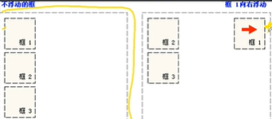
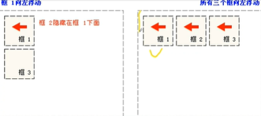
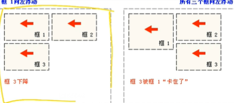

浮动的盒子可以向左或者向右移动,直到他们的边缘碰到父盒子或另一个浮动盒子的边框为止，由于浮动盒子不在文档的普通流中，所以文档的普通流中的浮动块盒子不占位。浮动不完全是定位,也不是正常的流布局。
浮动元素取值: float:lft/right/none;
当框1向左浮动时，它脱离文档流并且向左移动，直到它的左边缘碰到包含框的左边缘。 因为它不再处于文档流中,所以它不占据空间，实际上覆盖住了框2，使框2从视图中 消失。如果把所有三个框都向左移动,那么框1向左浮动直到碰到包含框，另外两个框 向左浮动直到碰到前一个浮动框。
如果包含框太窄,无法容纳水平排列的三个浮动元素,那么其它浮动块向下移动,直到 有足够的空间。如果浮动元素的高度不同,那么当它们向下移动时可能被其它浮动元素 “卡住”
